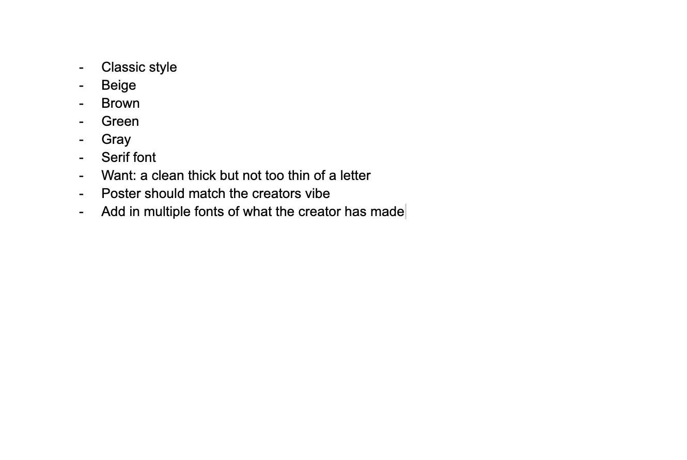
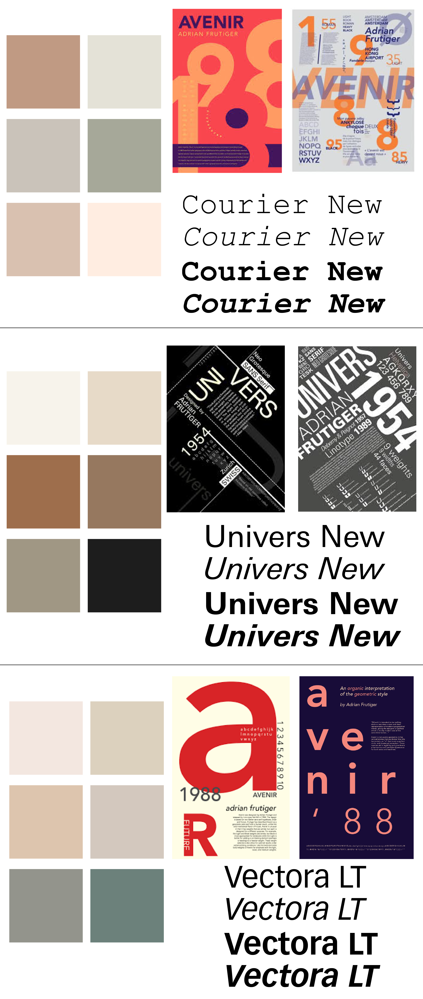
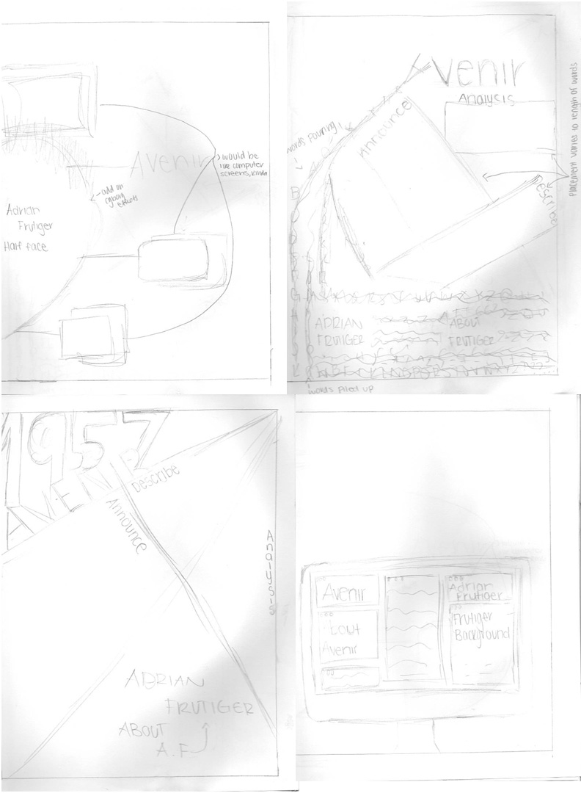

Typography Poster
This assignment's main goal was to choose a font family that could be found online and apply it as the starting point for designing an eye-catching poster. The assignment's main focus was on typography and how various font choices might affect a design's overall tone, mood, and message. With this, we had to build a poster that successfully conveys an idea or theme by experimenting with features like size, spacing, color, alignment, and composition by choosing a certain font family.
The Process
Overview
This poster's typography design centers on Adrian Frutiger's typeface Avenir. In addition to discussing the font's history, design characteristics, and potential uses in print and digital media, the poster examines the font's modern, clean, and geometric look. Through creative typography, layouts, and visual organization, the poster demonstrates why Avenir is considered as a classic and adaptable typeface in graphic design.

Brainstorming
I wanted to utilize a typeface that looked polished and classic for this portion of the project, so I decided to make a poster based on a serif font. I initially thought of using Times New Roman, but I ultimately opted against it because it's such a widely used typeface. After looking at different serif fonts, I discovered Adrian Frutiger's "Avenir" typeface, which caught my attention due to its elegant, modern, and clean style. I thought the typeface was a great option for designing an eye-catching typography poster because it blended beauty and simplicity.

Moodboard
I wanted my poster to have a simple, timeless, and modern appearance that mirrored Adrian Frutiger's typography style at this stage in the project. I experimented with a variety of Frutiger-designed typefaces and color schemes to determine which combinations produced the most effective visual impact for my overall design.

Sketches
I already had a general idea of how I wanted my poster to look, so I concentrated on experimenting with various layouts, typographic placements, and design elements that might help achieve my vision while maintaining the poster's aesthetic balance and organization.

3 Different Approaches
In order to determine which design would work best for the poster, I experimented with several forms, layouts, and color combinations in the first round. So as to better understand the contrast, space, and overall composition without depending too much on color, I then reduced some of the design to black and white. At this point, I concentrated more on polishing the design and playing with where to put the text and shapes. I experimented with several layouts to enhance the design's flow and readability since I wanted the poster to feel neater and more organized. I ended up having to come up with a lot of various designs and concepts as I kept refining and enhancing the poster. I was able to finalize a design that felt more finished, balanced, and unique overall thanks to this process, which also helped me better grasp what worked visually.